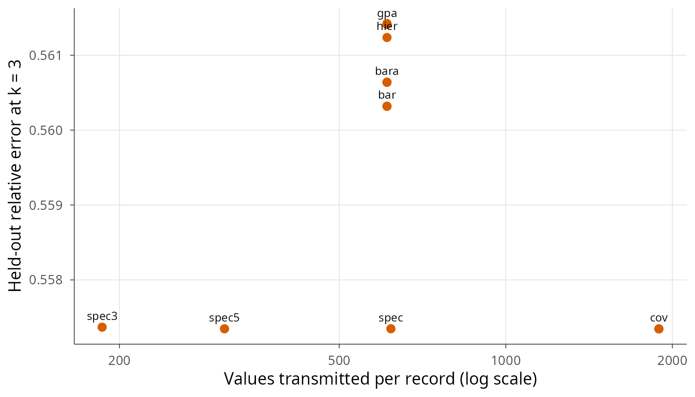
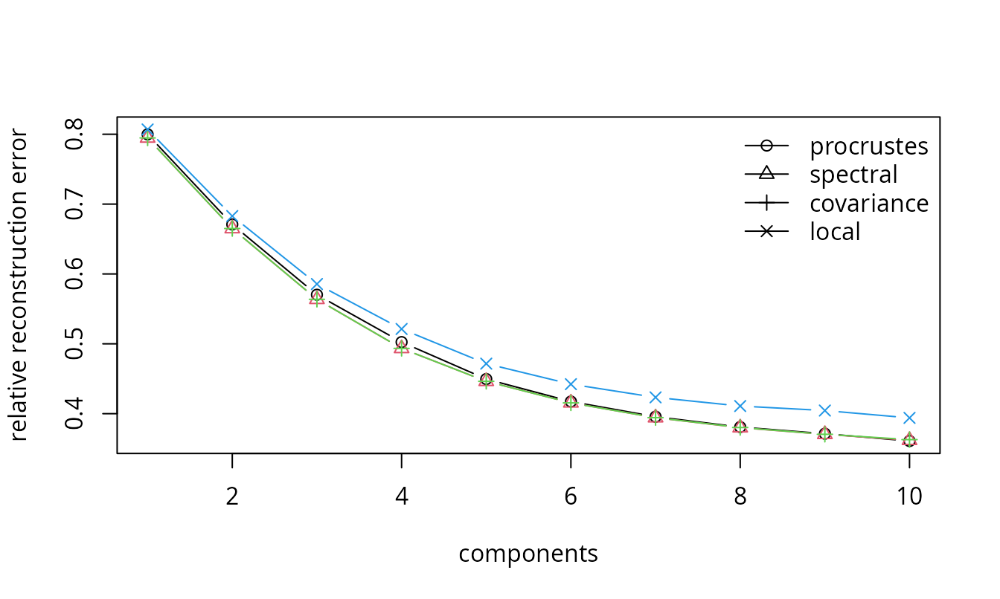

beatpool pools patient-specific principal component
bases of ECG heartbeats without sharing the raw signals. Each site sends
a small summary, either a p x q basis or a set of leading
eigenpairs, and the server assembles a common representation. This
vignette walks through the main functions on simulated data that mimic
the heterogeneity of real recordings.
Simulating heterogeneous records
library(beatpool)
sim <- simulate_beats(H = 8, n = 200, p = 61, q = 10,
model = "heterogeneous", epsilon = 0.2,
sigma = 0.15, seed = 1)
str(sim$X[[1]])
#> num [1:200, 1:61] 0.0736 0.0262 0.297 0.1357 -0.0229 ...
#> - attr(*, "record")= chr "sim1"
#> - attr(*, "labels")= chr [1:200] NA NA NA NA ...
#> - attr(*, "normal")= logi [1:200] NA NA NA NA NA NA ...The records share a common eigenbasis Q0 but each one is
rotated by an orthogonal matrix. The rotation is the source of the
federation problem: the individual bases are not comparable entry by
entry.
Patient bases
bases <- extract_bases(sim$X, q = 10)
bases[[1]]
#> beatpool PCA basis
#> data: 200 beats x 61 samples | components: 10
#> explained variance (first 3): 1.05, 0.5776, 0.4314
round(crossprod(bases[[1]]$T), 3)[1:4, 1:4]
#> [,1] [,2] [,3] [,4]
#> [1,] 1 0 0 0
#> [2,] 0 1 0 0
#> [3,] 0 0 1 0
#> [4,] 0 0 0 1extract_bases() returns one bp_basis object
per record. The columns are orthonormal, but their signs, order and
orientation are arbitrary.
Pooling
Four pooling operators are available. The orthogonal Procrustes mean is the default and minimises the average squared Frobenius distance to the inputs.
p_proc <- pool_bases(bases, method = "procrustes")
p_bar <- pool_bases(bases, method = "bar")
p_qr <- pool_bases(bases, method = "qr")
p_proc
#> beatpool pooled basis
#> method: procrustes | aligned: TRUE | bases: 8 | components: 10Pooling second moments is an alternative that requires no alignment at all. The assembled covariance
\[ \hat\Sigma = \sum_h w_h Q_h \Lambda_h Q_h' \]
is invariant to any orthogonal transformation of \(Q_h\), because the outer product absorbs it.
p_spec <- pool_spectral(bases, q = 10, q_out = 10)
p_cov <- pool_covariance(sim$X, q = 10)
p_spec
#> $T
#> [,1] [,2] [,3] [,4] [,5]
#> [1,] 5.211336e-03 -0.0106048839 0.0147584885 0.0055988519 0.0092742926
#> [2,] 9.265645e-03 0.0098700537 -0.0098198609 -0.0161568471 0.0193731781
#> [3,] 1.571986e-02 0.0063814627 -0.0063994584 -0.0081384887 0.0141543007
#> [4,] 2.448618e-03 0.0102266514 0.0110892030 -0.0105648806 -0.0094135335
#> [5,] 1.310069e-03 -0.0136820903 0.0070194405 -0.0234536834 0.0119085753
#> [6,] -7.753977e-03 -0.0021653865 -0.0046233441 -0.0167017009 -0.0101388737
#> [7,] 6.187955e-03 -0.0208396338 -0.0030569228 -0.0080185019 0.0067363665
#> [8,] 5.962291e-03 -0.0080215559 0.0057910802 -0.0151268308 0.0079420764
#> [9,] 1.003473e-03 0.0204783580 0.0069890786 -0.0163129104 0.0008715301
#> [10,] -4.639605e-03 0.0111658783 -0.0141101227 0.0143383472 0.0040242347
#> [11,] 1.610637e-02 0.0158971829 0.0257064939 0.0086449083 0.0051467721
#> [12,] -2.724982e-03 -0.0122374054 0.0236104973 -0.0034055661 0.0018262061
#> [13,] -1.394161e-03 -0.0075799300 0.0080624816 0.0018916197 0.0317775560
#> [14,] 9.636509e-03 0.0054042805 0.0188473269 0.0021654126 -0.0005869971
#> [15,] -1.755087e-02 -0.0079401022 0.0046241557 -0.0072487089 -0.0078146021
#> [16,] -6.187311e-03 0.0244076139 -0.0065563198 -0.0197152917 0.0276051694
#> [17,] 1.923440e-02 0.0076499363 0.0006805536 -0.0171442454 0.0101541525
#> [18,] 1.482736e-02 0.0140284049 -0.0066579250 -0.0096150138 -0.0077282930
#> [19,] -1.404050e-02 -0.0108441686 0.0324539548 -0.0046898803 0.0439888705
#> [20,] -1.347651e-02 0.0080241895 0.0130025554 -0.0099822340 0.0611236492
#> [21,] -7.319875e-05 0.0105905357 0.0441371103 -0.0829455540 0.1572202493
#> [22,] 9.914217e-03 0.0207033903 0.0969538449 -0.1153444507 0.2540565178
#> [23,] 6.882557e-03 0.0633282436 0.1782870853 -0.2270207771 0.3230451466
#> [24,] 3.263073e-03 0.0819185668 0.2491129313 -0.3012958408 0.3314658768
#> [25,] 5.719132e-02 0.1792832528 0.3238143606 -0.3132185060 0.2012075269
#> [26,] 9.779389e-02 0.2784534429 0.3340365915 -0.2119583043 -0.0511793262
#> [27,] 1.694673e-01 0.3518452865 0.2798012621 -0.0408950685 -0.2328741088
#> [28,] 2.611921e-01 0.3893625659 0.1508188027 0.1767370974 -0.2343794801
#> [29,] 3.231535e-01 0.3266285437 -0.0402817639 0.3031571934 -0.0679736443
#> [30,] 3.854167e-01 0.2118432838 -0.2126915145 0.1999101592 0.2015480574
#> [31,] 3.998709e-01 0.0185904658 -0.2892105651 -0.0132917440 0.3008816888
#> [32,] 4.133030e-01 -0.1600812102 -0.2340302063 -0.1984400070 0.1585428018
#> [33,] 3.782107e-01 -0.2933949443 -0.0469112495 -0.2901933317 -0.0906846550
#> [34,] 2.952418e-01 -0.3287957572 0.1449463995 -0.1568693920 -0.2829368762
#> [35,] 2.145370e-01 -0.3165571902 0.3069282715 0.0308287631 -0.2466059535
#> [36,] 1.464468e-01 -0.2448027683 0.3482489981 0.2247481402 -0.0244606077
#> [37,] 6.292783e-02 -0.1949038644 0.2826948316 0.3447887961 0.1943486774
#> [38,] 3.455356e-02 -0.1397848942 0.2031921444 0.3164174935 0.2871183349
#> [39,] 2.705042e-03 -0.0790564813 0.1431197538 0.2583193831 0.2404439769
#> [40,] -2.952220e-03 -0.0474901336 0.0668410228 0.1660016167 0.1750552998
#> [41,] -6.258786e-03 -0.0165774767 0.0247940824 0.1050170217 0.0913512751
#> [42,] -1.664012e-03 -0.0114534711 0.0242491151 0.0301913114 0.0399830596
#> [43,] -6.744158e-03 -0.0070566083 0.0001882159 0.0143287557 -0.0181498006
#> [44,] 4.886162e-05 0.0171487150 -0.0154377542 0.0046807427 -0.0046431295
#> [45,] -1.438021e-02 -0.0072736611 0.0044508939 -0.0120175290 -0.0026702780
#> [46,] 4.248891e-03 -0.0045860783 0.0199852548 0.0008634742 -0.0196460320
#> [47,] 1.211529e-02 -0.0107920795 -0.0008460840 0.0009463702 -0.0131825410
#> [48,] 1.844473e-05 -0.0092581688 0.0044890875 -0.0076269920 0.0149630368
#> [49,] -6.278536e-03 0.0027948805 0.0093126482 0.0087478532 0.0086254583
#> [50,] 7.838780e-03 -0.0153189717 0.0100231880 -0.0134114646 0.0518657475
#> [51,] 1.764061e-03 -0.0263159680 0.0036785129 0.0003301591 0.0058173121
#> [52,] 2.241937e-03 0.0003742467 -0.0009040822 0.0064032848 0.0173872308
#> [53,] 3.149657e-03 0.0037429647 0.0043778669 -0.0016334786 -0.0252363929
#> [54,] 5.952981e-04 0.0024628220 0.0156408053 0.0061537931 0.0049960438
#> [55,] 1.428229e-02 -0.0127905009 -0.0199047889 -0.0109549187 -0.0181554755
#> [56,] 8.168047e-03 -0.0016382350 0.0107920767 0.0178604569 0.0081597472
#> [57,] -4.659926e-03 -0.0129238369 0.0165366885 0.0081190675 0.0178677385
#> [58,] 1.281244e-02 0.0070621523 0.0002223923 0.0111170454 -0.0040219498
#> [59,] 1.132528e-02 0.0150578391 -0.0058214183 0.0042245874 0.0172973925
#> [60,] -7.393876e-03 0.0006252187 -0.0153360138 0.0088470301 0.0026568111
#> [61,] 1.029558e-02 0.0015592937 0.0023664249 0.0049800991 0.0165770546
#> [,6] [,7] [,8] [,9] [,10]
#> [1,] 0.0173498802 0.0057064124 0.0188858596 0.057096321 0.167513983
#> [2,] -0.0046166620 0.0005692385 0.0244527150 0.016198991 0.021127073
#> [3,] -0.0084588577 -0.0201708667 -0.0313826093 -0.073891387 0.009878611
#> [4,] -0.0205605061 -0.0021177009 -0.0031132152 0.024232471 0.120997122
#> [5,] 0.0096359243 -0.0180944583 0.0103978906 -0.010626764 0.061913246
#> [6,] 0.0097677189 0.0167365458 -0.0264367510 -0.096908497 0.017836207
#> [7,] -0.0180307697 -0.0219553920 0.0235572165 0.030014320 -0.026360957
#> [8,] -0.0006599865 -0.0081453495 0.0025536467 -0.004610821 -0.063461506
#> [9,] -0.0078828965 -0.0074878778 -0.0431686333 -0.034341348 0.042534496
#> [10,] 0.0022196949 -0.0258022585 -0.0318066300 0.022246343 -0.018649908
#> [11,] -0.0076454780 0.0016269620 -0.0307971940 -0.018525187 0.021814931
#> [12,] 0.0046092834 -0.0133321741 -0.0105439701 0.008659707 -0.175267646
#> [13,] -0.0170528582 0.0086673633 0.0653591915 0.027727774 0.111138748
#> [14,] -0.0122795769 -0.0239527368 -0.0449082276 0.097671932 0.013137358
#> [15,] 0.0165526741 -0.0124491923 -0.0372630165 0.023417237 -0.215946397
#> [16,] 0.0215211958 0.0466710814 0.0006982472 0.037335798 -0.178331005
#> [17,] -0.0521961504 0.0422074804 -0.0625230178 0.184028915 -0.164608918
#> [18,] -0.0376017639 0.0292853703 -0.0927236544 0.188647928 -0.162742198
#> [19,] -0.0871683370 0.1646502890 -0.2314840345 0.339025832 -0.180739833
#> [20,] -0.1445666847 0.2313100167 -0.2893035111 0.260486984 -0.234174088
#> [21,] -0.2693960829 0.3160771505 -0.2988434863 0.098718102 0.021603243
#> [22,] -0.2931263716 0.2672997404 -0.1452287203 0.012651378 0.238519681
#> [23,] -0.2934303384 0.1539923227 0.0497428910 -0.295428072 0.077780043
#> [24,] -0.1192989715 -0.0973249587 0.2931085731 -0.134918776 -0.120007637
#> [25,] 0.1273935959 -0.1997532973 0.1547186842 0.117883057 -0.127627240
#> [26,] 0.3117204639 -0.1540893073 -0.0898263581 0.222815072 -0.029436161
#> [27,] 0.2042537423 0.0796321566 -0.2290699028 0.005734031 0.161812004
#> [28,] -0.0298514587 0.2054203987 -0.1244397886 -0.166186632 0.080252783
#> [29,] -0.2431324651 0.0886659982 0.2169965806 -0.157293594 -0.102399180
#> [30,] -0.1859842424 -0.1205919100 0.1757303069 0.083165465 -0.153786551
#> [31,] 0.0572444455 -0.1985234933 -0.0341356443 0.251018545 0.019343737
#> [32,] 0.2196591926 -0.0263359206 -0.1682444427 -0.020840682 0.186759486
#> [33,] 0.1723401690 0.1864004820 -0.1237072369 -0.189849471 0.021331543
#> [34,] -0.0345617975 0.1899497902 0.1368176309 -0.083945123 -0.208333483
#> [35,] -0.2615540592 -0.0184518449 0.2201716363 0.073313766 -0.029492129
#> [36,] -0.1856128133 -0.2364815545 -0.0249766554 0.270335796 0.090744040
#> [37,] -0.0153930625 -0.2166481577 -0.2007731314 -0.017891030 0.127070988
#> [38,] 0.1978910828 -0.0385290806 -0.1875702303 -0.172601241 0.055576238
#> [39,] 0.2945534971 0.1981399285 0.0113498185 -0.230673246 -0.166168429
#> [40,] 0.2965763572 0.3550105556 0.1697115858 0.064921498 -0.241114410
#> [41,] 0.2064162854 0.3158034784 0.2851445084 0.199833979 0.032621827
#> [42,] 0.1007046348 0.2123475934 0.3105603557 0.280800154 0.254956867
#> [43,] 0.0212569107 0.1546015397 0.1962525222 0.194942517 0.290675481
#> [44,] -0.0009695496 0.0881546589 0.0965581280 0.139994848 0.267902818
#> [45,] -0.0066357073 0.0255521640 0.0460640039 0.061688798 0.081532546
#> [46,] 0.0250675196 -0.0053497160 0.0073807345 0.039546249 -0.026883932
#> [47,] -0.0067137365 0.0032400971 -0.0175302328 -0.021991023 0.001692958
#> [48,] 0.0283758692 0.0654206017 0.0062112503 0.039119980 -0.029193019
#> [49,] -0.0203334562 0.0054904194 0.0150684550 0.052907715 0.157288558
#> [50,] 0.0127748993 0.0234258055 0.0429588688 -0.054782707 0.129962554
#> [51,] 0.0158333605 0.0068295662 -0.0137430216 -0.055033025 -0.099520972
#> [52,] 0.0174291461 -0.0242758837 -0.0087347265 -0.045528022 0.095183299
#> [53,] -0.0139848925 -0.0390769210 -0.0291795508 -0.011761185 -0.096767250
#> [54,] 0.0025905539 -0.0062946308 0.0390156423 -0.021075519 0.021735197
#> [55,] 0.0043742933 -0.0460046390 -0.0073062225 0.016390067 -0.052738176
#> [56,] 0.0106332422 0.0327275569 0.0151063972 -0.019046147 0.092958982
#> [57,] 0.0022753759 0.0027654458 -0.0532330799 -0.026306846 0.017663946
#> [58,] 0.0062588875 -0.0038317180 -0.0186517056 0.004377384 0.045748166
#> [59,] 0.0223665474 0.0333271193 -0.0543146053 -0.058865180 0.013149159
#> [60,] 0.0047041557 0.0221938638 0.0014066471 -0.028039668 0.106490228
#> [61,] -0.0021262940 0.0465210091 -0.0479912347 -0.042478356 0.035113131
#>
#> $values
#> [1] 0.97173658 0.65669337 0.38521727 0.23710755 0.16063494 0.10621970
#> [7] 0.07299344 0.04816379 0.02848586 0.01588295
#>
#> $mean
#> [1] 0 0 0 0 0 0 0 0 0 0 0 0 0 0 0 0 0 0 0 0 0 0 0 0 0 0 0 0 0 0 0 0 0 0 0 0 0 0
#> [39] 0 0 0 0 0 0 0 0 0 0 0 0 0 0 0 0 0 0 0 0 0 0 0
#>
#> $q
#> [1] 10
#>
#> $n
#> [1] 8
#>
#> $p
#> [1] 61
#>
#> $method
#> [1] "spectral"Comparing every operator
pool_all() runs the operator families on the same bases
and records the communication cost of each one. The spectral summary
transmits q * (p + 1) numbers, the basis operators
p * q, and the covariance p * (p + 1) / 2.
all <- pool_all(sim$X, q = 10)
attr(all, "numbers")
#> bar bara cov covn gpa hier proc qr qra spec spec3 spec5
#> 610 610 1891 1891 610 610 610 610 610 620 186 310The cost–error plane can be drawn directly from the collection.
err <- vapply(all, function(T) mean(vapply(sim$X, reconstruction_error,
numeric(1), T = T, k = 3)), numeric(1))
plot_cost_error(all, err, k = 3)
Reconstruction on held-out beats
X_new <- simulate_beats(H = 1, n = 200, p = 61, q = 10,
model = "heterogeneous", epsilon = 0.2,
sigma = 0.15, seed = 99)$X[[1]]
ks <- 1:10
err <- data.frame(
k = ks,
procrustes = vapply(ks, function(k)
reconstruction_error(X_new, p_proc$T, k), numeric(1)),
spectral = vapply(ks, function(k)
reconstruction_error(X_new, p_spec$T, k), numeric(1)),
covariance = vapply(ks, function(k)
reconstruction_error(X_new, p_cov$T, k), numeric(1)),
local = vapply(ks, function(k)
reconstruction_error(X_new, bases[[1]]$T, k), numeric(1))
)
matplot(err$k, err[, -1], type = "b", pch = 1:4, lty = 1,
xlab = "components", ylab = "relative reconstruction error")
legend("topright", names(err)[-1], pch = 1:4, lty = 1, bty = "n")
The local basis is an oracle: it is fitted on the same recording. The pooled bases should approach it as the number of records grows.
Downstream clustering
mix <- simulate_beats(H = 1, n = 400, p = 61, q = 10, model = "mixture",
mu = 1.5, sigma = 0.2, seed = 2)
X <- mix$X[[1]]
cl <- cluster_beats(X, p_proc$T, k = 5, K = 2, truth = mix$labels[[1]],
seed = 1)
cl$metrics
#> prop_correct ari purity
#> 1 0.915 0.688119 0.915Rate and distortion
The pooled operator is meant to be transmitted, so the basis is only
useful if its coefficients can be stored in few bits.
rate_distortion() quantises each coefficient with a uniform
scalar quantiser, entropy-codes the integer levels and charges the basis
and the mean once per record, amortised over its beats.
rd <- rate_distortion(X_new, p_spec$T, k = 10,
steps = 2^seq(0, -6, by = -1))
rd[, c("step", "rate", "distortion", "compression_ratio")]
#> step rate distortion compression_ratio
#> 1 1.000000 75.30185 43.32129 8.910804
#> 2 0.500000 84.68070 37.95012 7.923883
#> 3 0.250000 94.13853 36.61105 7.127793
#> 4 0.125000 103.13306 36.30428 6.506158
#> 5 0.062500 111.31520 36.22296 6.027928
#> 6 0.031250 118.53183 36.20211 5.660927
#> 7 0.015625 123.64793 36.19703 5.426698
plot(rd$rate, rd$distortion, type = "b", pch = 19,
xlab = "bits per beat", ylab = "mean relative error (%)")The compression ratio is taken against the raw signal at 11 bits per
sample. Pass transmit_basis = FALSE for a fixed transform
such as the DCT, which the decoder already knows, and
n_amortize to change the number of beats over which the
basis is amortised.
Reading WFDB files
The package contains a pure-R reader for MIT-BIH style records, so the whole pipeline can run without external WFDB software.
x <- read_wfdb("100", dir = "data/mitdb")
ann <- read_annotations("data/mitdb/atr/100.atr")
X <- prepare_record(x$MLII, ann, record = "100", fs = 360, wsize = 30)
b <- pca_basis(X, q = 10)Stability
Jackknife stability measures how much the pooled basis changes when one recording is removed.
loo <- leave_one_out_pool(bases)
jackknife_stability(loo)
#> record relative subspace
#> 1 1 0.9716123 0.3339151
#> 2 2 0.1147934 0.1129390
#> 3 3 0.1130315 0.1112893
#> 4 4 0.1165928 0.1139043
#> 5 5 0.1098670 0.1083451
#> 6 6 0.1155400 0.1134648
#> 7 7 0.1182198 0.1169588
#> 8 8 0.1163175 0.1139492Several shared bases
When records differ, a single basis leaves structure unused. Each record can transmit the eigenpairs of its energy-normalised moment, and the receiver can group them into a few shared bases without asking the records for anything else. A record then compresses with the basis of lowest error and sends its index.
sim <- simulate_beats(H = 12, n = 100, p = 30, q = 3, epsilon = 0.5, seed = 7)
moments <- lapply(sim$X, energy_moment, q = 6)
fit <- pool_shared(moments, k = 3, C = 3, seed = 1)
fit
#> <bp_shared> 3 bases of dimension 3, group sizes 4/4/4
select_shared(fit, sim$X[[1]])
#> [1] 1
#> attr(,"errors")
#> [1] 0.5575332 0.6546102 0.6381575